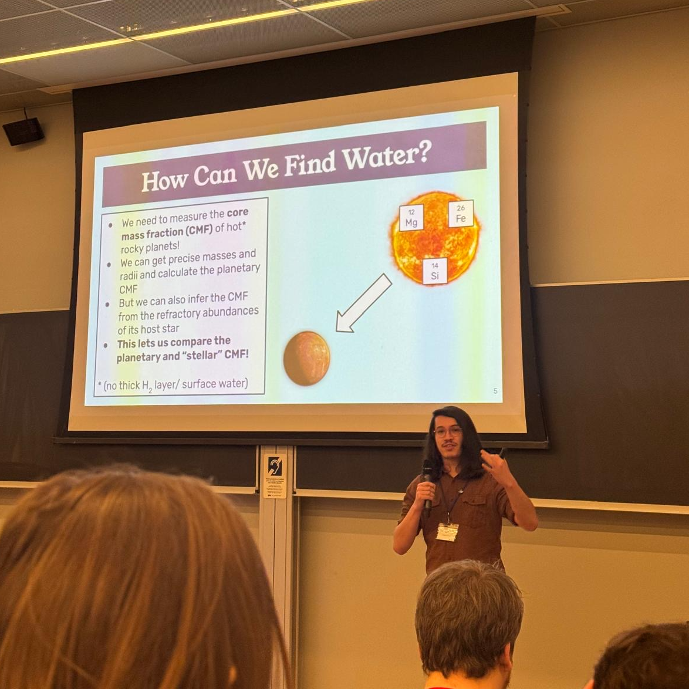
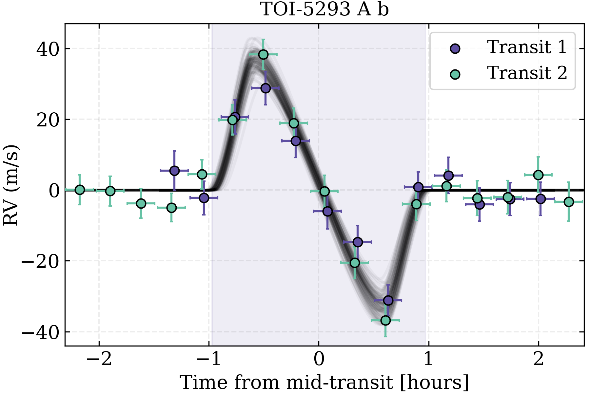
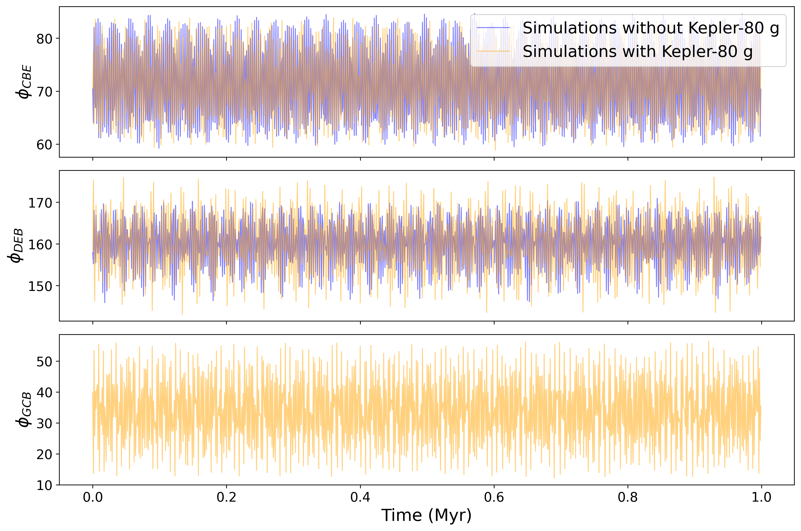

About Me

I'm Drew Weisserman, a PhD student at McMaster University. My job is to characterize the largest planets around the smallest stars to better understand how they form and evolve.
In the past, I’ve worked on characterizing small planets, too, especially through comparing them to their host stars.
I am incredibly passionate about public outreach in STEM, and I believe that being able to effectively communicate ideas and get people to engage with science is the single most important skill that a scientist can have. I love teaching, and go out of my way to tutor, teach, or educate others about science, be it through teaching assistantships or through outreach.
Outside of research, I really love digital art and baking!
Here's a list of all of my publications!
Research
Here are some of my favorite projects so far!

Aligned Stellar Obliquities for Two Hot Jupiter-hosting M Dwarfs Revealed by MAROON-X: Implications for Hot Jupiter Formation
Hot Jupiters around M dwarfs (HJMDs) are exceptionally rare, and there’s been debate about how they form -- specifically, if they form the same way as they would around Sunlike stars. One way to do this is to characterize the alignment of the planet’s orbit with the direction of stellar rotation, through measurements of the Rossiter-McLaughlin (RM) effect. However, as of 2024, only one such measurement had been made for HJMDs!
We made the second and third such HJMD RM effect measurements, observing TOI-5293 A b and TOI-3714 b. We find that these planets’ orbits are well-aligned with their host stars’ rotation, in agreement with theory.
This is consistent with HJMDs slowly migrating inwards with the circumstellar disk, but could also be consistent with them migrating suddenly due to interactions external companions in both of these systems. While we suspect the latter, we need more observations to really characterize how these planets migrated!
 Super-Earth masses and stellar abundances from NIRPS reveal tentative evidence for water-rich formation around M dwarfs
Super-Earth masses and stellar abundances from NIRPS reveal tentative evidence for water-rich formation around M dwarfs
Planet formation around M dwarfs appears in simulations to be qualitatively different around Sunlike stars, with planets accreting large quantities of volatiles during the formation process. Here, we look for observational evidence of this!
We do a demographic survey of small rocky planets around M dwarfs with the Near Infrared Planet Searcher (NIRPS), precisely characterizing the masses of three of these planets. We then characterize the refractory abundances of these planets’ host stars (as well as the host stars of several other rocky planets!), and compare stellar and planetary compositions.
We find that these planets are systematically less dense than their host stars’ compositions would imply. We attribute this to the presence of significant reservoirs of water sequestered inside the planetary interiors -- evidence of volatiles that must have been there during the formation process!

Kepler-80 Revisited: Assessing the Participation of a Newly Discovered Planet in the Resonant Chain
The Kepler-80 planetary system was originally thought to be a system of five transiting planets in a chain of three-body mean-motion resonances, with masses inferred from transit timing variations (TTVs). Recently, a sixth planet was discovered in the system as well! We set out to characterize this new planet and analyze the new planet's effect on the rest of the planetary system.
Ultimately, we find that Kepler-80 g not only has very little effect on the existing resonances of the system, it actually participates in a three-body resonance itself!
However, its existence does noticeably affect the inferred masses of the other planets, to a degree that could affect their inferred composition, meaning that any planets with TTV-derived masses must consider whether undiscovered planets could be altering these masses before you use them.
Contact
Email: weisserd@mcmaster.ca
Address: A.N Bourns Science Building, College Ct, Hamilton, ON L8S 4L8, Room ABB-327